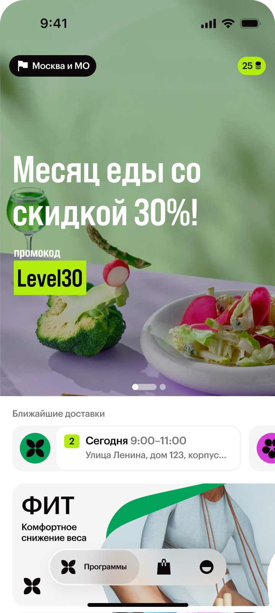
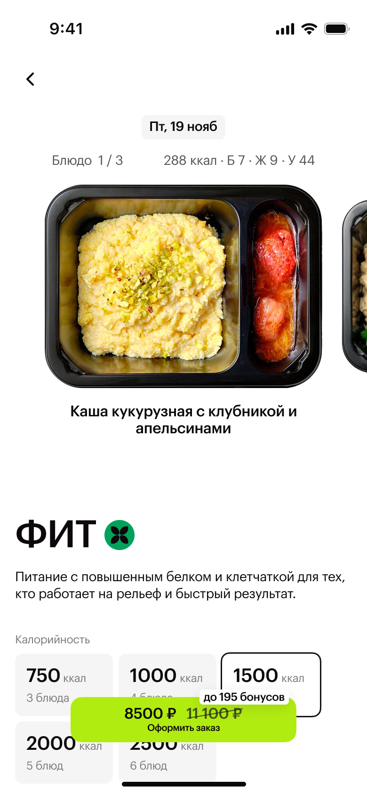
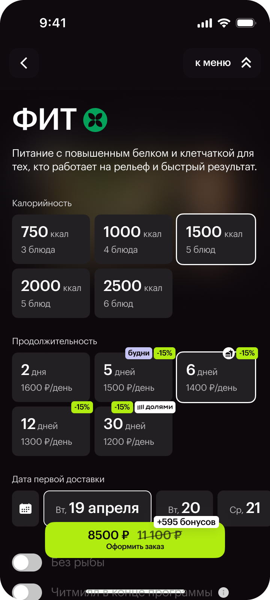
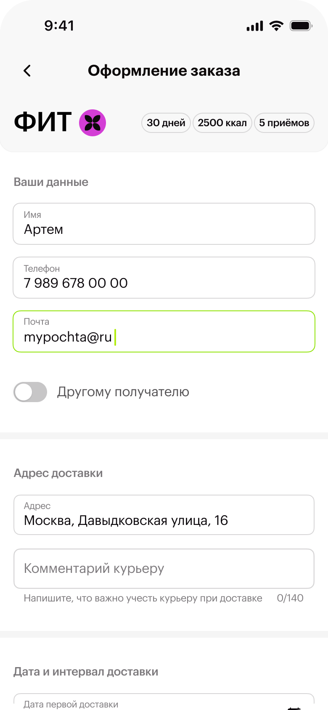
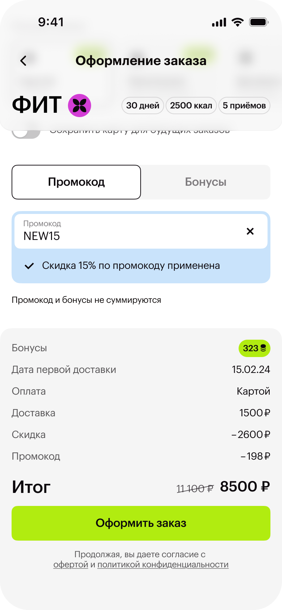

Ключевой сценарий
Пересобрала основной путь выбора рациона и заказа на базе новой дизайн-системы Level Kitchen.
Главная и конфигуратор меню
Собрала выбор программы, меню и основные настройки в последовательном сценарии с фокусом на составе блюд и КБЖУ.



Оформление заказа
Перенесла ключевые параметры заказа в понятный мобильный сценарий и сохранила оплату частями из веб-версии.

